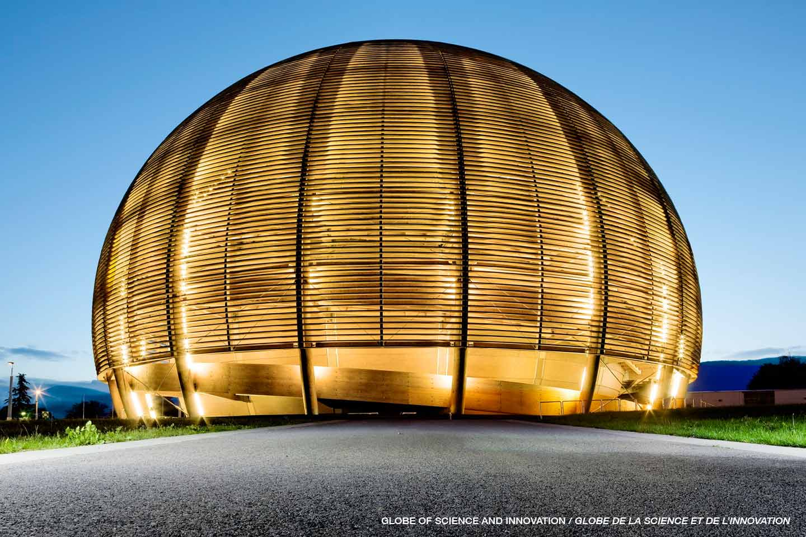

Simple and Awesome

There are many other benefits to the summer program at CERN, both personal and professional. Here are some of them:
- See first-hand how large-scale physics experiments work.
- Get some useful programming experience with C++ and ROOT.
- Meet bright people from all over the world.
- Receive lectures from some of the top scientists in the world.